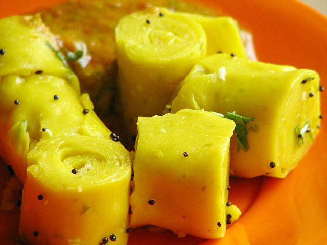

Prep15 min
Cook20 min
Active35 min
Serves4
Difficultyadvanced
Contains: milk, sesame, mustard
Checked against the ingredient list for ten allergens: milk, egg, fish, crustaceans, tree nuts, peanuts, sesame, mustard, soy and gluten. Brands vary, so read the label on anything new to you.
Ingredients
Quantities for 4.
- 100g, sifted twice Besan
- 500ml, sour and thin Buttermilkor 150g sour yogurt whisked with 350ml water
- 1/4 tsp Turmeric
- 1 tsp, paste Ginger
- 4: two as paste for the batter, two slit for the tempering Green Chilli
- 1/4 tsp Asafoetidause compounded-free hing to keep this gluten-free
- 3 tbsp Neutral Oil
- 1 tsp Mustard Seeds
- 1 tbsp Sesame
- 10 Curry Leaves
- 3 tbsp, freshly grated Coconutoptional
- 3 tbsp, chopped Coriander Leavesoptional
- to taste Salt
Cookware
stovetop
Before you start
- Oil two large flat trays or the back of two baking sheets and have them within arm's reach before you start cooking. The batter sets as it cools and will not wait.
- Sift the besan twice and whisk the batter until glassy-smooth. A single lump becomes a hole in the sheet.
- The buttermilk must be sour. Fresh, sweet buttermilk gives a flat-tasting khandvi.
Method
- Whisk the besan, buttermilk, turmeric, ginger, chilli paste, asafoetida and salt to a completely smooth, lump-free batter.Strain it through a sieve if you have any doubt at all.
- Pour into a heavy pan and cook over medium heat, stirring without pause with a flat spatula.Constant stirring, scraping the base and corners. The moment you stop it catches and lumps.
- After 10-12 minutes it will thicken to a glossy paste that pulls away from the sides of the pan.
- Test it: spread a teaspoon on an oiled tray, wait 30 seconds and try to peel it up. If it lifts clean, it is ready; if it smears, cook 2 minutes more and test again.This test is the whole recipe. Undercooked batter will never roll.
- Working fast, pour the batter onto the oiled trays and spread it paper-thin with a flat scraper.
- Let it cool 5 minutes until set and no longer tacky, then cut into strips about 6cm wide.
- Roll each strip up tightly from one end and stand the rolls on a serving plate.
- Heat the oil, pop the mustard seeds, add the sesame, slit chillies, curry leaves and a pinch of asafoetida, and pour it over the rolls.
- Scatter the coconut and coriander over and serve at room temperature.
Storage
Best the day it is made. Keeps 2 days refrigerated but firms up; bring back to room temperature for an hour before serving. Do not reheat.
Nutrition Good estimate
Medium protein: 11 g a serving, 15% of the calories
| Per serving192 g | Per 100 g | |
|---|---|---|
| Calories | 299 kcal | 156 kcal |
| Protein | 11.0 g | 6 g |
| Carbohydrate | 24.1 g | 12 g |
| of which sugars | 10.5 g | 6 g |
| Fibre | 4.5 g | 2 g |
| Fat | 18.4 g | 10 g |
| of which saturated | 5.6 g | 3 g |
| of which unsaturated | 11.5 g | 6 g |
Nearest database match used for asafoetida, curry leaves. Estimated from raw ingredients using USDA FoodData Central.
Times, yields, allergens and nutrition are guidance. Use your own judgement on doneness and on storing. More in About.